Reposição Florestal
Estamos comercializando cotas de reposição florestal. Consulte disponibilidade e condições com nossa equipe.
Conhecer as cotas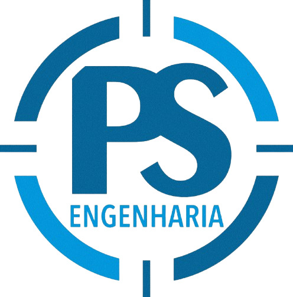
Reposição florestal à venda, monitoramento técnico e topografia para loteamentos. Três frentes de atuação, com a atenção que seu projeto precisa.
Estamos comercializando cotas de reposição florestal. Consulte disponibilidade e condições com nossa equipe.
Conhecer as cotasAcompanhamento técnico para atender às exigências de monitoramento fitossanitário das florestas plantadas.
Entender o serviçoDados de campo, demarcações e mapas técnicos para dar base ao seu empreendimento.
Conhecer nossa atuaçãoNossos serviços atendem aos mais rigorosos padrões técnicos e legais do setor.
Compromisso com práticas sustentáveis e preservação ambiental em todos os projetos.
Soluções customizadas para atender às necessidades específicas de cada cliente.
Cotas à venda, com atendimento próximo para entender sua demanda e orientar a negociação.
A PS Engenharia está comercializando cotas de reposição florestal. Nossa equipe apresenta as opções disponíveis e conversa com você sobre quantidade, documentação e condições de negociação.
Entre em contato com sua necessidade para receber uma proposta.
Consultar cotas à vendaInforme a quantidade desejada e os dados básicos do empreendimento.
Converse sobre cotas disponíveis, documentação e condições.
Alinhe o escopo da negociação e os próximos passos com a equipe.
Sua floresta precisa de acompanhamento. A PS Engenharia já atende essa demanda.
Atuamos no monitoramento florestal para apoiar produtores no acompanhamento de suas áreas e no atendimento às exigências aplicáveis.
Converse com nossa equipe sobre as espécies cultivadas, a área do plantio e a situação da propriedade. A partir dessas informações, alinhamos o serviço necessário.
Solicitar atendimentoO cuidado com a floresta envolve conhecer a área e acompanhar suas condições. Converse com nossa equipe sobre o monitoramento fitossanitário da sua propriedade.
Vídeo ilustrativoVídeo indisponível no momento. Você pode acessar a fonte abaixo.
Município, área cultivada e identificação dos talhões para contextualizar o atendimento.
Espécies florestais, idade dos plantios e informações disponíveis sobre o cultivo.
Situação cadastral e histórico de monitoramento para avaliar as próximas etapas.
Informações do terreno para dar base ao planejamento e à implantação do seu empreendimento.
Realizamos levantamentos topográficos para apoiar as decisões que dão forma a loteamentos urbanos e rurais.
Unimos dados de campo, cálculo de áreas, demarcações e mapas técnicos para que seu empreendimento comece com uma base confiável.
Conversar sobre meu projetoTopografia, mapas e informações do terreno orientam as etapas de um loteamento desde o planejamento até a implantação.
Vídeo ilustrativoColeta de informações do terreno para apoiar a elaboração de projetos técnicos.
Cálculo de áreas, divisão de terrenos e demarcação de lotes conforme o escopo contratado.
Organização dos dados de levantamento para apoiar o planejamento do empreendimento.
Conte com a PS Engenharia para conversar sobre o levantamento da sua área.
Solicitar orçamento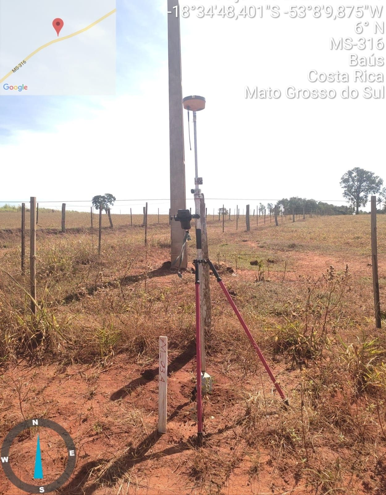
Georreferenciamento de Imóveis rurais em atendimento à Lei nº 10.267/2001, desmembramento, remembramento, unificação. Mais de 500 propriedades certificadas junto ao INCRA nos estados de Mato Grosso, Mato Grosso do Sul, Goiás, Minas Gerais e Paraná, código de credenciamento XMMW.
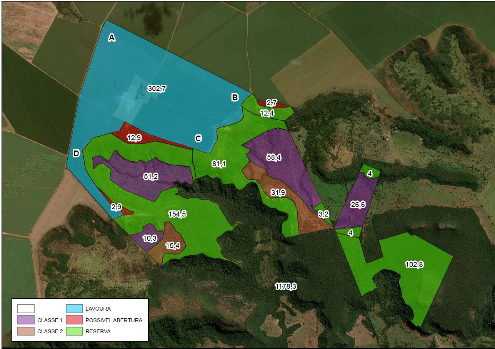
Divisão de imóveis em espólio, avaliação e criação de critérios de divisão, acompanhamento de todo trâmite legal até a emissão das matrículas individualizadas. Adequação documental e ambiental em todo o processo.
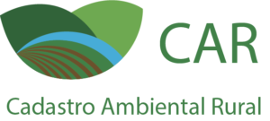
Cadastro ambiental rural em atendimento à Lei nº 12.651, de 25 de maio de 2012, adequação e elaboração nos sistemas Siriema, Sicar, Simcar, Semad.
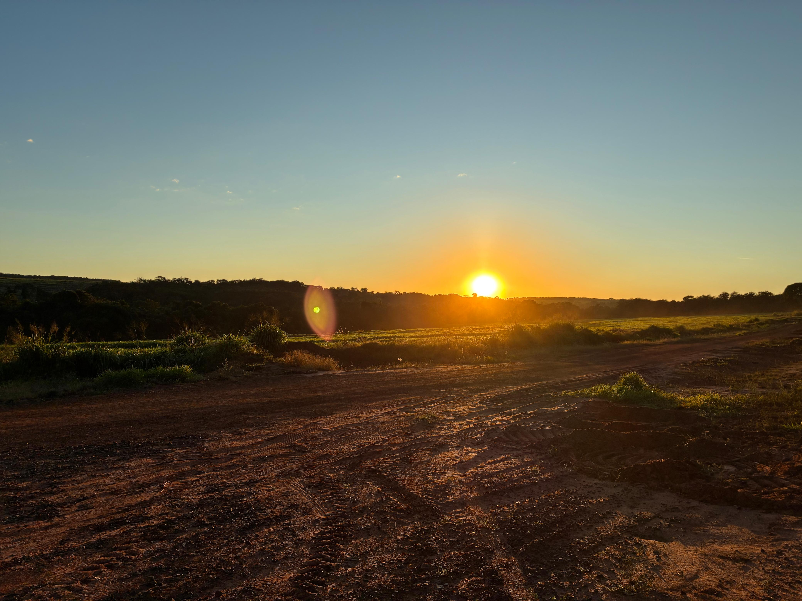
Consultoria ambiental e adequação de projetos, propriedades rurais e empreendimentos que impactam o meio ambiente. Criação de pátios junto ao IBAMA, emissão de DOF e documentação de empreendimentos madeireiros: carvoeiras, madeireiras, elaboração e acompanhamento dos processos. Laudos técnicos e ambientais.
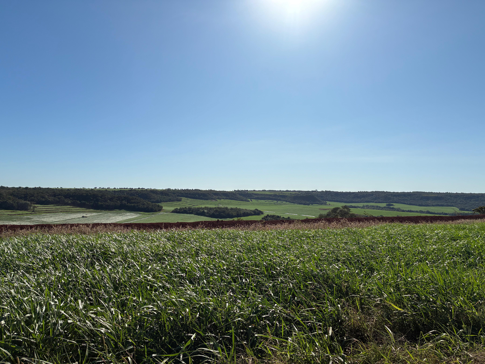
Projetos para recuperação de áreas degradadas: déficit de reserva legal, adequação de áreas de preservação permanente, erosões e voçorocas, projetos para atendimento a notificações e multas ambientais.
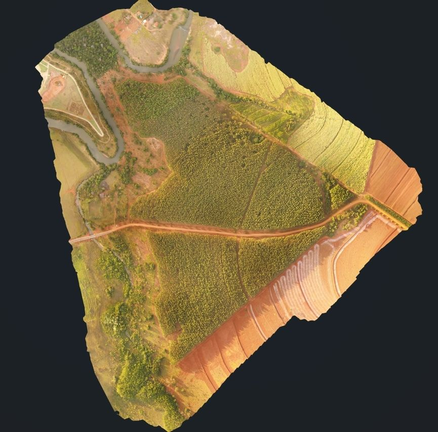
Aerolevantamento para elaboração de mapas temáticos, modelos tridimensionais e ortomosaicos georreferenciados.
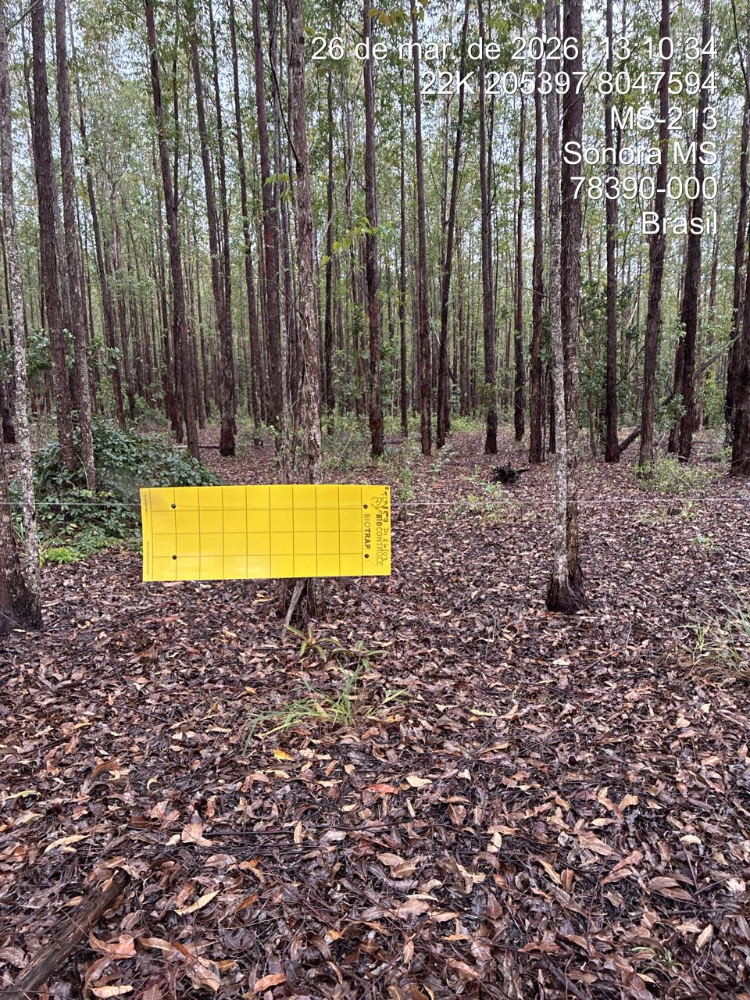
Licenciamento ambiental para supressão vegetal (desmatamento), retirada de árvores isoladas, licenciamento de barragens, outorgas, cadastro de recursos hídricos, licenciamento de empreendimentos rurais e carvoarias.
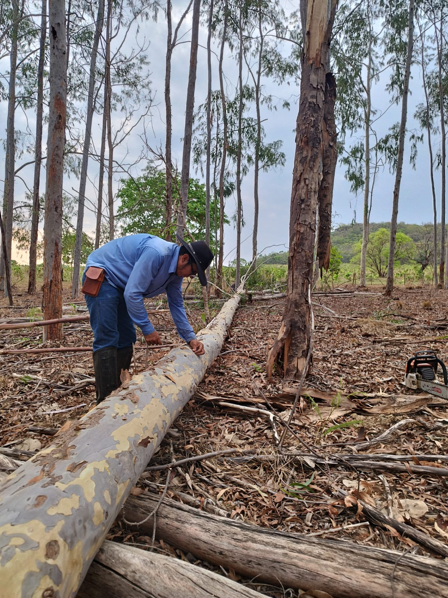
Realização de inventários florestais em florestas nativas e plantadas para determinar produção pré-corte e avaliação e valoração de florestas.
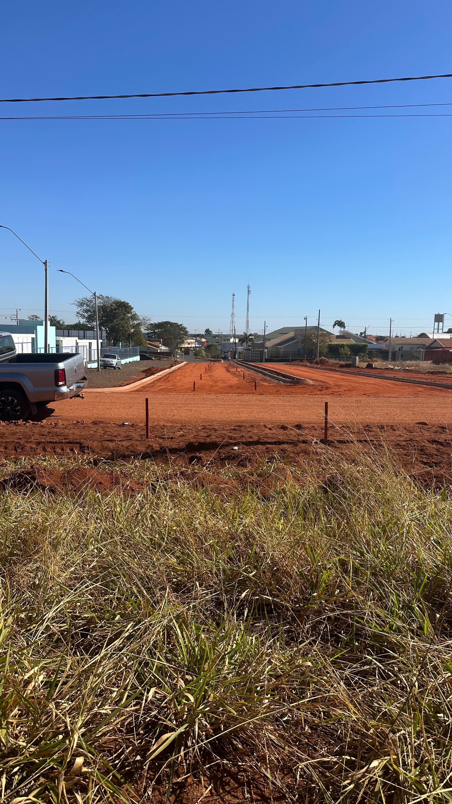
Serviços especializados em topografia para loteamentos urbanos e rurais, incluindo divisão de terrenos, demarcação de lotes, cálculo de áreas e elaboração de projetos técnicos conforme legislação vigente.

Elaboração de projetos e comercialização de cotas de reposição florestal, com orientação técnica para sua demanda. Conheça as cotas à venda.
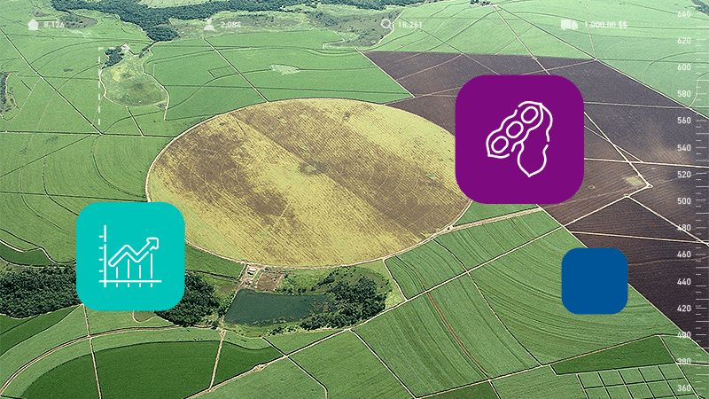
Laudos técnicos de avaliação de imóveis rurais para compra e venda, financiamento bancário, inventários e processos judiciais. Análise de valor de mercado considerando características físicas, localização e potencial produtivo.

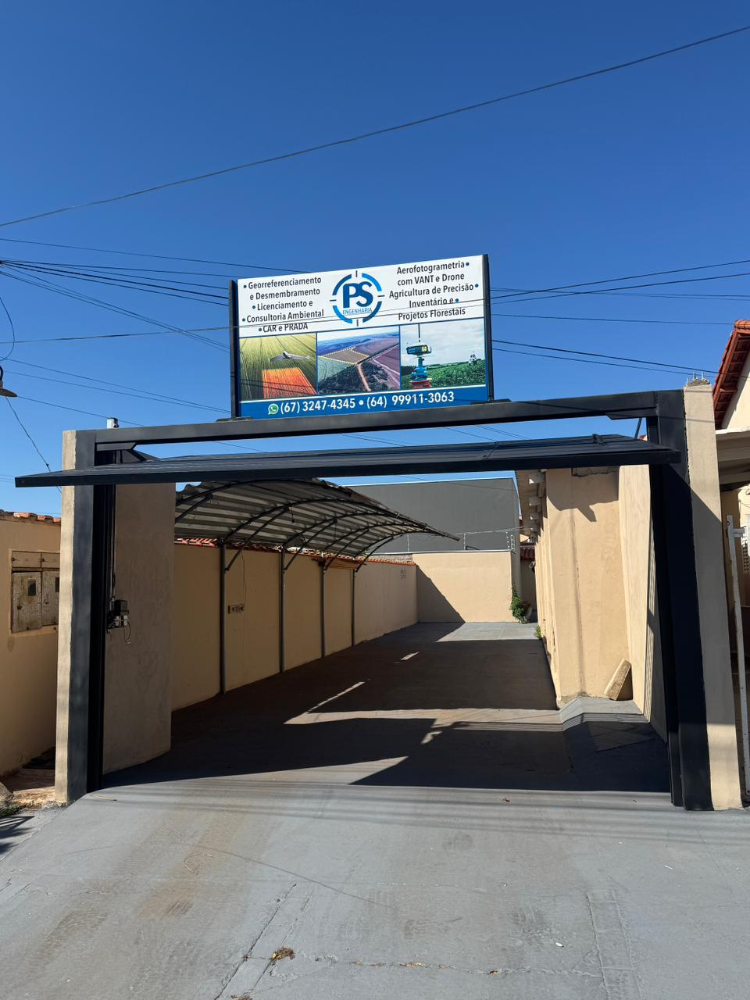
Empresa de assistência técnica, sediada em Costa Rica – MS, mais de 8 anos de mercado, especializada em: georreferenciamento de imóveis, cadastro ambiental rural, projetos agronômicos, florestais, inventários florestais, compra e venda de ativos e reposição florestal. Mais de 500 propriedades georreferenciadas junto ao INCRA, nos estados de Goiás, Mato Grosso, Mato Grosso do Sul e Minas Gerais. Consulta disponível através de: https://sigef.incra.gov.br/consultar/parcelas — Código: XMMW.
Fornecer soluções técnicas inovadoras em processos de regularização e adequação de imóveis rurais, com atendimento personalizado e “desenrolado”.
Engenheiro florestal especialista em georreferenciamento de imóveis rurais, Msc. em agronomia, engenheiro agrônomo, engenheira agrícola e técnicos de campo.
Quer vender sua fazenda? A PS Engenharia ajuda você a apresentar a área com informações claras, organização e conhecimento do campo.
Unimos conhecimento do campo, avaliação técnica e rede de contatos para aproximar fazendas de compradores interessados em áreas produtivas e ativos florestais.
Quero vender minha fazendaEntendemos localização, área, atividades, infraestrutura e potencial produtivo.
Ajudamos a reunir os dados que tornam a apresentação da fazenda mais clara.
Apresentamos sua fazenda para compradores que buscam áreas produtivas.
Fale com a PS Engenharia e apresente sua oportunidade.
Enviar minha fazendaAlguns dos nossos principais clientes:
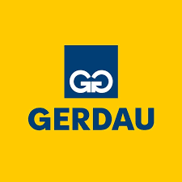
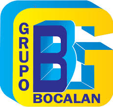
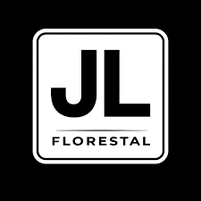
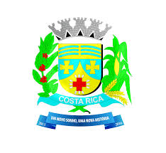
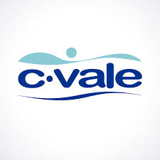
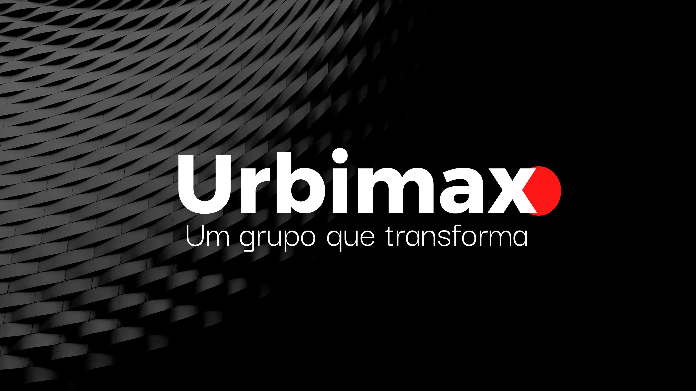
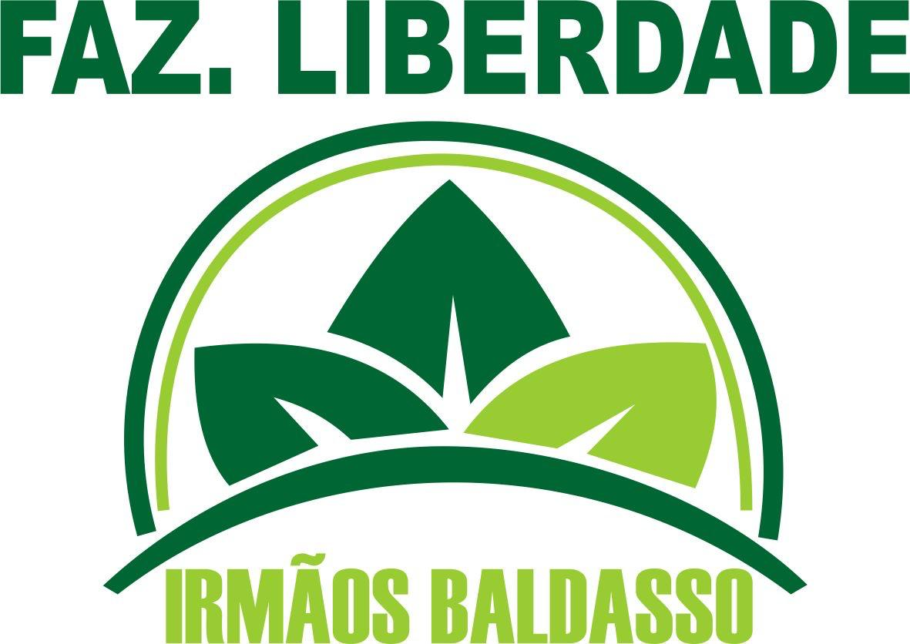
Orientações para ajudar você a acompanhar exigências ambientais e manter sua propriedade preparada.
Antes de iniciar uma atividade que envolva consumo de matéria-prima florestal, verifique as exigências aplicáveis e mantenha os documentos organizados.
Falar sobre reposição florestal ↗O acompanhamento de campo ajuda a identificar necessidades de manejo e manter informações técnicas disponíveis quando solicitadas.
Falar sobre monitoramento ↗Mapas, áreas, cadastros e documentos atualizados facilitam processos de regularização, negociação e planejamento da propriedade.
Organizar minha fazenda ↗As obrigações ambientais variam conforme atividade, localização e situação da área. Fale com a PS Engenharia para uma orientação inicial sobre a sua propriedade.
Falar com a equipe